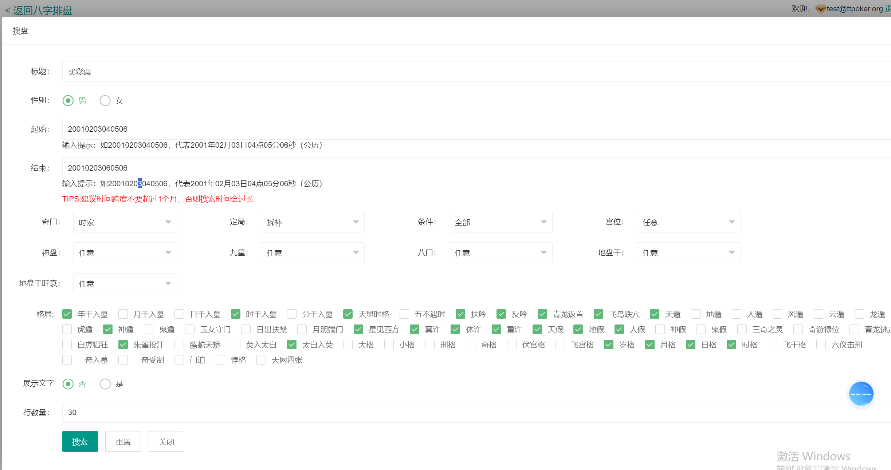

01
输入与时间
日期、时间、时区和排盘参数。
面向浏览器端传统文化排盘系统的图文与技术说明，明确区分可验证的本地 JavaScript、产品截图和需要服务端配合的集成功能。
GitHub Repository日期、时间、时区和排盘参数。
四柱关系、大运、天文辅助及服务接口集成。
浏览器排盘页面与结果保存场景。
Bazi, Ten Gods, hidden stems, luck cycles
Stem/branch relationship processing
Astronomy interface support
Time-zone data



本地文件和截图可以核验；部分功能调用服务端接口，不能描述为完整离线引擎。内容仅供传统文化软件研究，不构成确定性、医疗、法律或金融建议。
周易源码与易经排盘 · 八字排盘与四柱八字源码 · 紫微斗数与奇门遁甲 · 七政四余排盘